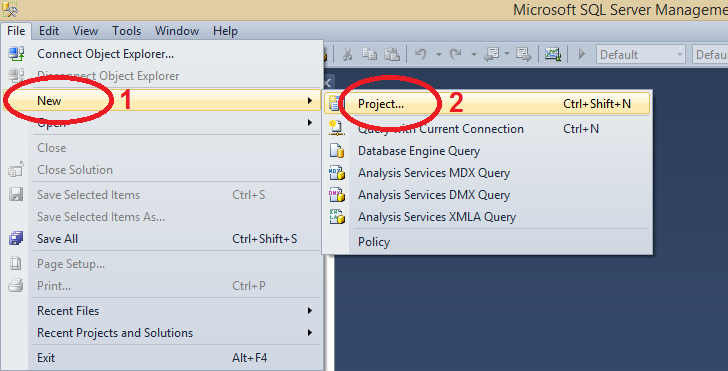
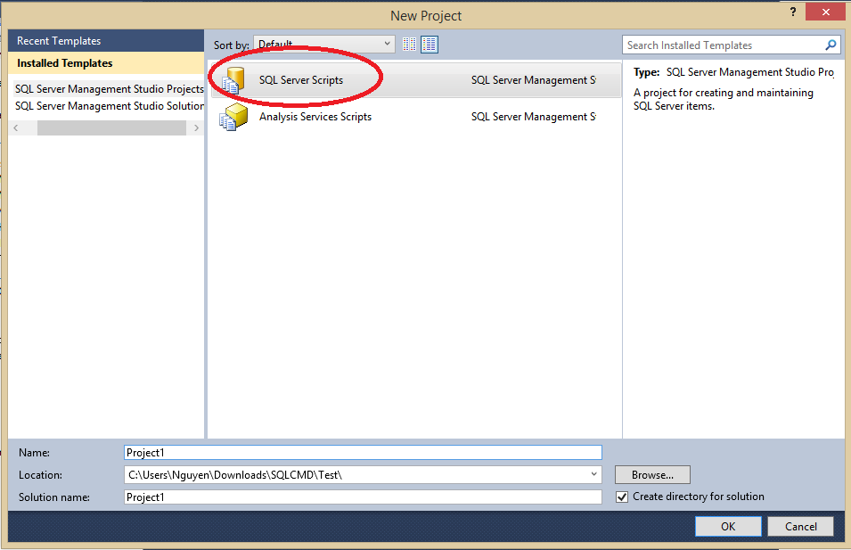
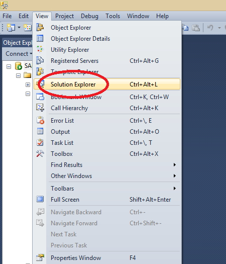
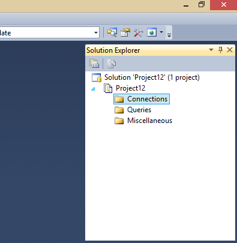
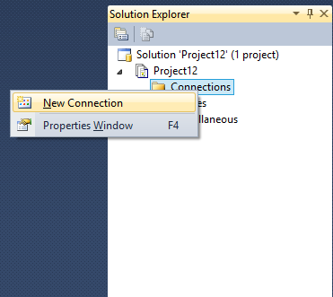
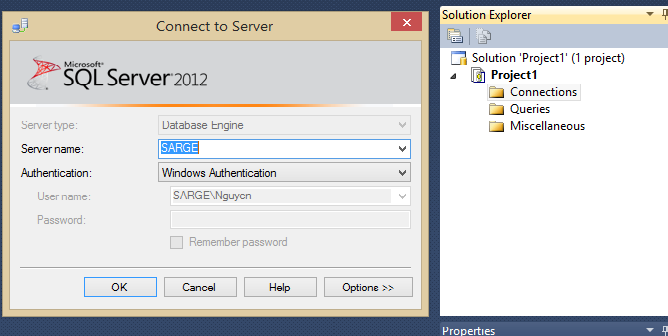
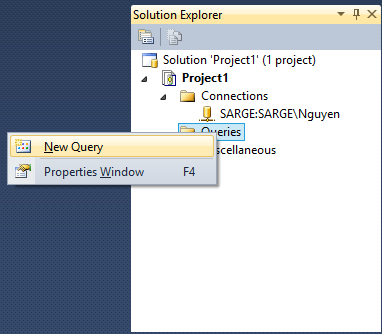
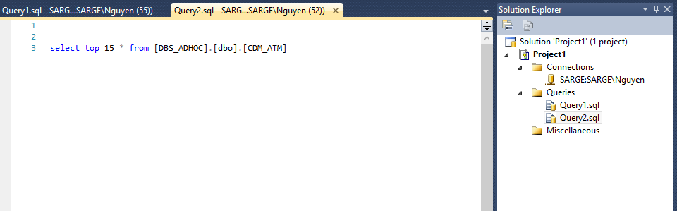
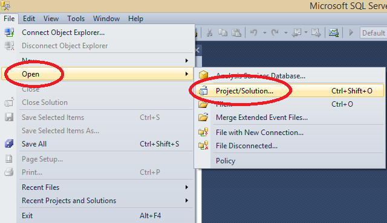
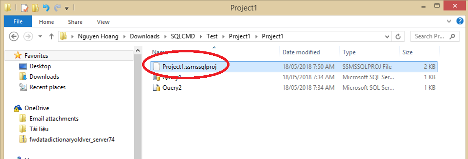

4. SQL prọject¶
4.1. Tạo SQL project¶
Các bước :
- File
- New
- Project (hoặc Ctrl + Shift + N)
- Chọn SQL Server Scripts -> đặt tên và đường dẫn


4.2. Tạo connection và queries :¶
Các bước :
- Mở màn hình Solution Explorer (Ctrl + Alt + L)
- Connections -> New connection
- Queries -> New Query

Mở màn hình Solution Explorer

Tạo connection :


- Tạo query


4.4. Mở project đã có sẵn¶
Các bước :
- File
- Open
- Project/Solution (hoặc Ctrl + Shift + O)
- Mở đường dẫn tới project -> chọn file có đuôi .ssmssqlproj

